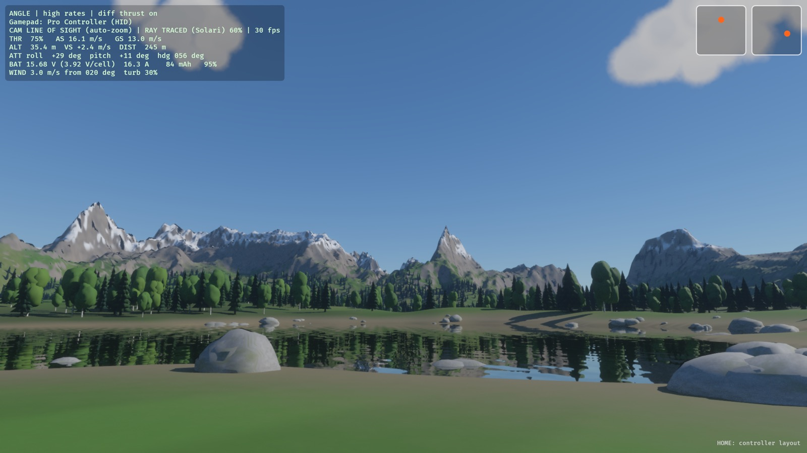
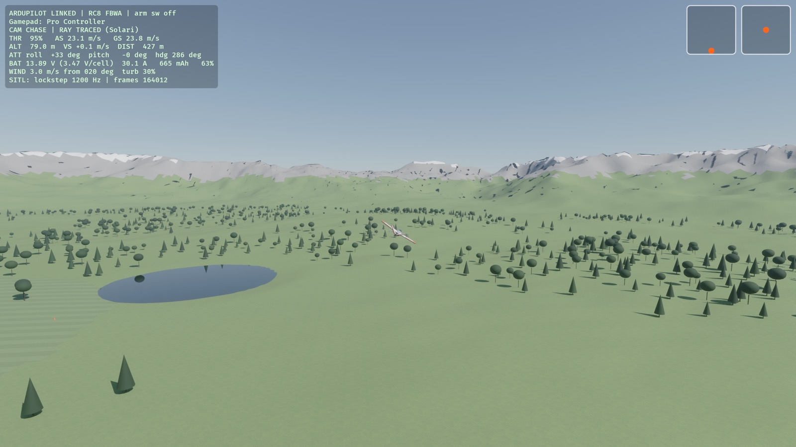

Two planes
The T1-S Ranger, a plain twin-motor plane, and the T1-S VTOL with two tilt-rotors, a rear rotor and ArduPilot.
A flight model from geometry
Strip theory: stalls, adverse yaw, prop wash and V-tail coupling come out of the airframe, not a lookup table.
Your radio
A RadioMaster TX15 or any EdgeTX/OpenTX radio over USB, a Switch Pro Controller, or the keyboard.
ArduPilot in the loop
The sim is the physics backend for ArduPlane SITL, in lockstep, with a ground station for missions.
See it fly


Run it
ardupilot/build_native.sh # once: builds ArduPlane SITL cargo run --release # the VTOL, with its own ArduPilot
The manual is generated from the behaviour specs the simulator is tested against: every page is a feature, a tutorial or a test result.